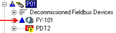

Download fieldbus block configuration and strategy
You have assigned the strategy to a node, saved it, reconciled differences between the device and placeholder, and commissioned the device. The changes you have made are stored in the DeltaV database but have not yet been written to the device. The DeltaV system places a blue triangle next to the device in DeltaV Explorer to indicate that the device needs to be downloaded.

- In DeltaV Explorer, right-click the device and select . DeltaV software informs you if items subordinate to this one also need to be downloaded and can verify the configuration if you choose.
- Make sure the modules associated with the devices on the segment have been downloaded. The module information must be sent to the H1 card before devices are downloaded.
- Read the important Warning and if you are sure you want to download, click Yes.
- When the download is complete, the blue triangle disappears from the device.
There may be other blue triangles in the DeltaV Explorer hierarchy. Download those items if you are comfortable doing so or read the DeltaV Explorer help on downloading for more information.
The Express fieldbus Download option is available for faster downloads of fieldbus ports and devices during plant startup and commissioning. One port or multiple ports can be downloaded from the Express fieldbus Download dialog.